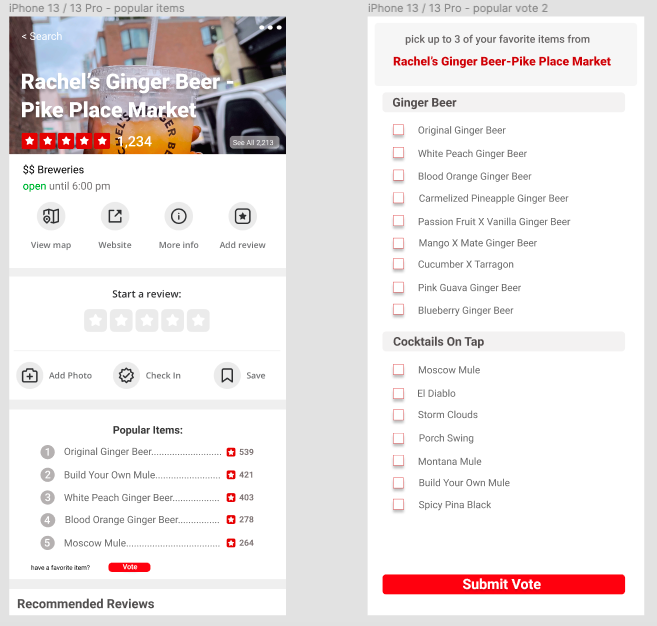
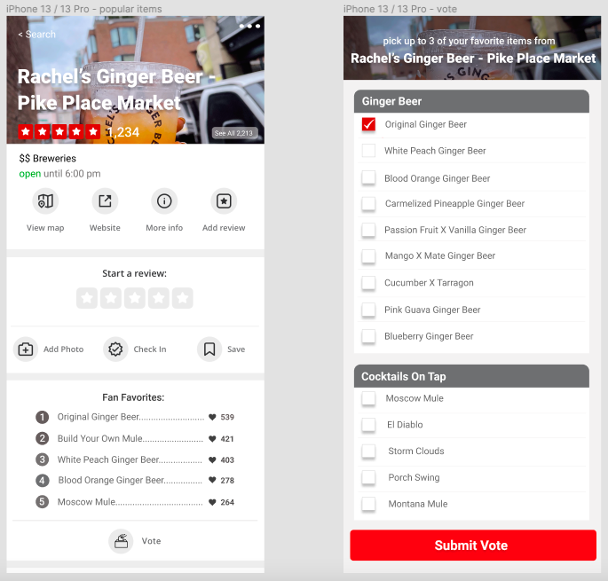

"In order to succeed, your desire for success should be greater than your fear of failure."
- Bill Cosby

Yelp’s goal is to connect people with local businesses, and are currently able to achieve this by providing a platform for past customers to share their opinions about said businesses - good or bad - in hope of helping future customers with the decision of ultimately supporting the establishment or not. The problem with Yelp currently is that the information provided by past customers is not structured enough to make it easy to make a quick decision, specifically for menu items. This especially impacts users who are on-the-go and do not have time to research restaurants or shops for an extended period of time. This also impacts users who make their decision solely based on the food items offered at the establishment.
A series of open-ended questions was initially asked to 10 people on separate occasions to determine the intended market of the product and gain an understanding of how users currently use Yelp to decide which restaurant to eat at.
Sarah is a working professional who wants to get something for dinner nearby. She doesn’t have much time to extensively research restaurants but wants to preview the menu to make sure that the establishment has good dishes that other Yelpers have liked.
In order for the product to be visible on a business’s Yelp page, the establishment must have satisfied the following conditions:
As a Yelper, I want to be able to view popular menu items from a restaurant based on other Yelper’s experiences.
As a Yelper, I want to contribute to the ranked list based on my own experience at the establishment by voting for my favorite menu items.
I explored different user experience flows of the menu listing feature using Figma.
The following designs were created upon discussing with 5 previous Yelp users what was liked/disliked about the initial design.
| # | Metric | Purpose | Goal |
|---|---|---|---|
| 1 | Ratio of Number of People who Vote to Number of Written Reviews | To compare engagement with the new feature versus current engagement via written reviews. (user acquisition) | Increase user engagement in the application by 60%.
Also the ratio of votes to reviews should be at minimum 2:1.
Reasoning: The voting feature is a simpler and less time-consuming way to engage on Yelp compared to writing reviews, so there should be more votes. |
| 2 | Number of times one user interacts with the feature | Give insight into how frequently a Yelper uses the feature when researching restaurants/eats. | There is a feature interaction 7 out of 10 restaurant page views.
Reasoning: A yelper should use this feature when visiting any restaurant Yelp page as an aid. |
| 3 | Length of Time Spent Viewing List Feature | To measure overall engagement with the feature. | View the section for a minimum of 5 seconds.
Reasoning: Enough time to scan the list and decide to vote (if applicable). |
| 4 | Percentage of users interacting with feature per day/month | To gauge consistency of interaction with the product by users. | 40% of all users interact with feature
Reasoning: Yelp has many different use cases, and approximately 60% of all users are looking up businesses. 40% is a good baseline, since the product is only applicable to restaurants. |
The following table outlines general information about the product go-to-market plan:
| V1 Launch Date | 4 months from start date |
|---|---|
| Pricing | None |
| Place | Yelp home page for a claimed restaurant businesses |
| Devices | IOS, Android, Web |
| How | Mobile Devices: Version upgrade through the App Store (Apple) or Google Play (Android)
Web Application: No upgrade needed for the user. Deploy changes to the server and access at yelp.com |
The following outlines our promotional strategy once we are closer to our launch date.